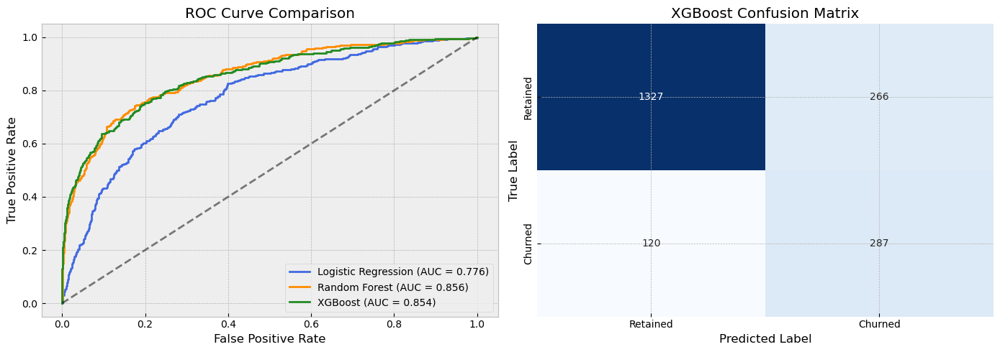
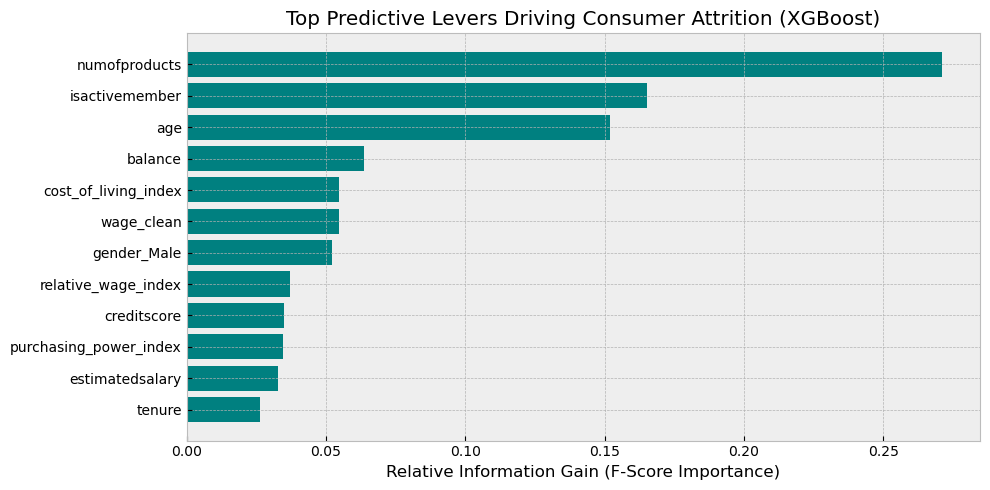

Macroeconomic Drivers of
Consumer Banking Attrition
An end-to-end predictive risk framework integrating consumer banking activity profiles with external macroeconomic stressors to isolate high-risk customer cohorts under economic volatility.
Predictive Modeling & ML (Python 3.11)
- Champion Architecture:
XGBoost (XGBClassifier) - Ensemble Benchmarking:
RandomForestClassifier,LogisticRegression - Evaluation Frameworks:
classification_report,confusion_matrix,roc_curve,roc_auc_score
Feature Processing & Ingestion
- Data Transformation:
Pipeline,ColumnTransformer,train_test_split - Feature Engineering:
OneHotEncoder,StandardScaler - Analytics Foundations:
pandas,numpy,matplotlib,seaborn
Executive Summary
Traditional churn models function within a vacuum, isolating customer behavioural patterns without adjusting for external macroeconomic variables. This case study addresses that gap by enriching classic customer metrics with real-world financial stressors—specifically, linear-interpolated national average wage indexes and localised Cost of Living (CPI) parameters—to model consumer "Purchasing Power" constraints. By benchmarking multiple predictive architectures, an optimised XGBoost model was selected as the champion framework, achieving a 71% Target Recall on the minority churn class.
1. Architecture Benchmarking & Metric Optimization
Because failing to flag a shifting customer results in an asymmetrical financial loss to a bank's balance sheet, maximising Recall for the minority churn class was prioritised over raw global accuracy. The modelling pipeline evaluated a baseline parametric model (Logistic Regression), a bagging ensemble (Random Forest), and a gradient-boosted tree (XGBoost) using native cost-sensitive adjustments (such as scale_pos_weight) to correct for the steep 80/20 class imbalance.
| Model Architecture | Target Recall (Class 1) | Target Precision (Class 1) | Global Accuracy | ROC-AUC |
|---|---|---|---|---|
| Logistic Regression | 71% | 39% | 71% | 0.7762 |
| Random Forest | 55% | 66% | 85% | 0.8562 |
| XGBoost (Champion) | 71% | 52% | 81% | 0.8537 |
While the Random Forest architecture yielded an impressive global accuracy, it ultimately failed the core risk parameter, missing 45% of actual attrition events. XGBoost struck the optimal commercial threshold, capturing 71% of churning customers while maintaining a significantly tighter precision boundary (52%) relative to the high-noise linear baseline.

Figure 1: ROC Curve space validation across candidate modelling pipelines.
2. Feature Engineering & Macroeconomic Transmission
A continuous macroeconomic historical timeline (2010–2026) was reconstructed from wide-format national wage datasets using linear interpolation and automated CAGR projection metrics. Customer profiles were then matched against historical baselines according to their unique tenure cohorts to extract a normalised purchasing_power_index.

Figure 2: Information gain metrics isolating the global drivers of customer attrition.
Extracting the global feature importance rankings reveals that external financial indicators act as critical transmission channels for consumer flight. When localised living costs inflate, customer disposable cash buffers compress, driving immediate sensitivity towards competitor pricing parameters and product runoff.
3. Financial Strategic Impact
To translate raw classification performance into quantifiable revenue management, the holdout confusion matrix outputs were passed into a strategic balance sheet simulation utilising industry-standard retail banking parameters:
- Average Annual Account Asset Value: $500
- Proactive Retention Offer Unit Cost: $100
- Targeted Incentive Conversion Rate: 50%
By leveraging XGBoost to capture risk groups proactively rather than reacting post-attrition, the framework minimises costly False Negatives. The marginal operational cost of distributing loyalty discounts to False Positive accounts is structurally outweighed by the capital assets protected, generating significant net portfolio value over baseline strategies.